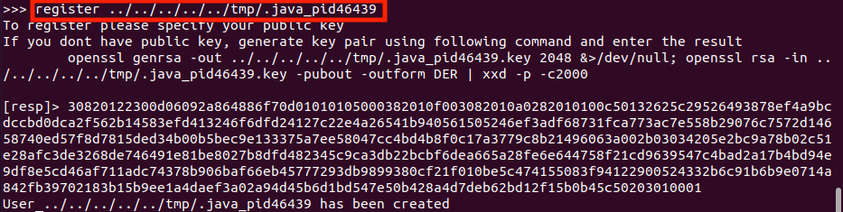

对参加的比赛进行复盘是一件很快乐的事情，有些高质量的比赛会学到很多新的知识。这次的WCTF2020中遇到的3道题目都能学到不少，在这里记录下writeup。
Thymeleaf
thymeleaf这道题从名字上来看就是一道模版注入题。题目首先需要扫描路径，经过扫描，发现登录接口/login。
抓包之后发现seesion为jwt加密，然后使用c-jwt-crack工具爆破secret，爆破出来的secret为admin。然后伪造session，成功登入。接下来需要寻找注入点。
由于扫描出来了/swagger-ui.html，一个swagger文档，就直接拿到了接口信息，进行下面的操作。
正常情况下，/auth/user/<username>返回的是一个JSON响应。
使用DELETE方法后，得到的是不一样的响应结果。
提示找不到模版，说明将/auth/user/admin作为模版，寻找对应的.html文件。当path中存在双引号或者单引号时，会出现如下信息，需要绕过引号，方法很多。
这里是将整个path作为viewname了，由于可控的只有部分内容，使用__...__包裹能够使得__...__里面的内容进行预处理，对应的需要使用的payload形式为__${}__::x.，这里payload形式为什么是这样，可参考另一篇文章，这里就不解释了。绕过引号的方式很多。
- true.toString().charAt(0).toChars()[0].toString()
- T(Character).toString(104)
- T(String).valueOf(new char[]{xx,xx,xx,xx,x})
选择的是执行命令的方式，环境在window下，最终选用cmd.exe -c more flag。Java中用type命令并不能读到flag。
最终的结果为
SSHLYUXA
这是一道很有意思的Java Pwn题，攻击思路以及后续的利用都值得学习。
题目描述
题目通过ssh方式成功登录，然后可以选择创建一个App或者销毁一个App。在这个App中，用户可以做以下三个操作：
- Register username。 应用程序会请求public key并将其存储在当前目录的keys/目录中，文件名为username.pub。
- Auth username。 应用程序会产生一个值并要求用户用key进行加密以验证其身份。验证成功则会监听一个unix socket，等待即将到来的message。socket文件在当前目录的socket/目录中，文件名为username。
- msgto username。 应用程序会显示接收方的public key，读取加密的message并发送至相应的unix socket。
这道题目给出了源码，从源码中可以看出，无论是在生成public key或者unix socket文件时，都存在目录遍历漏洞，可将文件写在任意位置。
通过目录遍历漏洞，可以将socket文件、pub文件写入任意位置，也能读取任意位置的pub文件。
结合Java Attach机制就可以做这道题了。利用Java Attach机制attach上目标JVM，上传恶意的agent文件，然后发送动态加载agent的指令即可，将命令执行结果保存在一个pub文件中，然后读取pub文件内容。
整个题目的思路很清晰了，分为以下两步。
- attach上目标JVM
- 动态加载agent
attach目标JVM
根据上面对于Java Attach机制的分析，我们首先需要获得目标JVM的pid，然后启动目标JVM的Attach Listener线程。
目标JVM的pid可通过main线程的nid进行预测。通过向目标JVM发送SIGQUIT信号，即可打印出这些信息。
在ubuntu20.04下pid为nid-1的十进制，这里为46439。
获取到目标JVM的pid后，就可以创建.attach_pid46439文件，利用前面的目标遍历漏洞，在register并auth后，可以创建任意位置的.attach_pid46439文件。此时执行的命令为
1 | register ../.attach_pid46439 |

这样，就成功创建了.attach_pid46439文件，然后再次发送SIGQUIT信号。此时可以发现/tmp/.java_pid46439成功创建，说明已经成功attach上目标JVM。
动态加载agent
agent的内容是攻击者上传的一个恶意Jar包。由于任意写入到.pub文件限制了512字节的大小，因此需要整个Jar包的内容非常简洁。自然地，一个精简的内容如下:
1 | //A.java |
采用Jar命令压缩时仍然超出了512字节的大小，由于Jar也是标准的zip压缩格式，可以采用具有更高压缩比的7z压缩方式，压缩命令为
1 | 7z a -tzip -mx=9 agent.jar META-INF/MANIFEST.MF A.class |
压缩完，确实比之前减少了很所，但仍然超过了512字节，查看A.class，java自动地加上了默认构造函数。
可利用处理器编写Processor来移除它。执行的命令为
1 | javac -g:none -processor MyProcessor A.java |
即便这样之后，还未达到512字节，使用字节码编辑器去掉异常相关代码，并移除pop操作，这样最终准备好了512字节的Jar包。将其写入到/tmp/pld.pub文件中，执行注册命令，然后输入十六进制编码的Jar包内容。
1 | register ../../../../../tmp/pld |
然后向目标JVM发送动态加载Jar包的命令，由于向/tmp/.java_pid46439发送命令，需要使用msgto ../../../../../tmp/.java_pid46439用户。

在注册完后，即可向其发送消息，消息内容为十六进制编码的命令。
1 | 1\x00load\x00instrument\x00false\x00/tmp/pld.pub=sh -c $@|sh . echo /readflag /FLAG>/tmp/flag.pub\x00 |
发送完之后，这条指令就会被执行，因此flag内容被存入了/tmp/flag.pub中，此时只需要向../../../../../tmp/flag发送消息，就会将/tmp/flag.pub内容十六进制编码后显示出来。最后获取到了flag。
Spaceless Spacing
题目给了一句话"connect to 3.137.154.50:4242"，这就是全部了。首先nc连上，看看有什么结果。
Google一下第一行+HTTP，得知为HTTP/2.0协议。curl提供了–http2-prior-knowledge参数来使用HTTP/2.0协议。
curl命令加上--http2-prior-knowlwdge参数，可以发送http/2.0协议的请求。
1 | curl --http2-prior-knowledge localhost:4242/ |
就这样获得了应用的源码。尝试了/
分析程序逻辑，首先可以爆破secret的位数，接下来爆破每一位的具体值看起来应该使用时间侧信道。即比较时若匹配失败直接返回，匹配成功则会sleep一个很小的时间，进行下一次的匹配直接匹配失败返回。因此某一位匹配成功时，返回的响应会晚一些。如果是采用测量时间差的方式，会受到很大的网络扰动，这根本不可能成功。但是在HTTP/2.0协议下，可以不用测量时间差就可以获得返回响应的顺序。这道题目的作者参考了USENIX2020的一篇论文”Timeless Timing Attacks: Exploiting Concurrency to Leak Secrets over Remote Connection”。这篇论文中介绍了这样的利用方式。
HTTP/2.0新特性
HTTP/2通过支持标头字段压缩和在同一连接上进行多个并发交换，让应用更有效地利用网络资源。还允许为请求设置优先级，让更重要的请求更快速地完成，从而进一步提升性能。
HTTP/2所有性能增强的核心在于新的二进制分帧层，它定义了如何封装HTTP消息并在客户端与服务器之间传输。可归纳如下:
- 所有通信都在一个TCP连接上完成，此链接可以承载任意数量的双向数据流。
- 每个数据流都有一个唯一的标识符和可选的优先级信息，用于承载双向消息。
- 每条消息都是一条逻辑HTTP消息(如请求/响应)，包含一个或多个帧。
- 帧是最小的通信单位，承载着特定类型的数据，例如HTTP标头、消息负载等等。来自不同数据流的帧可以交错发送，然后根据每个帧头的数据流标识符重新组装。
题目复现
从HTTP/2.0协议的新特性中得知，每个数据流都会有一个唯一的标识符，称为streamId。由于多路复用的特性，不同的请求在同一连接中以几乎并行的方式发送，服务端会根据streamId重新组装然后执行请求逻辑，一有返回立即发送响应内容。因此可以通过如下的方式侧信道得出每一位secret值。
首先爆破出secret的位数，假设为10。
那么接下来，对于其中的每一位，在尝试所有字符的爆破时，准备2种类型的请求。
- A:secret参数中对应的位为”*”(一个绝对不会存在secret中的字符)，使得在比较该位时，一定会失败然后直接返回。
- B:secret参数中对应的位为尝试爆破的字符，使得在比较该位时，有可能会比较成功，然后sleep一个很小的时间，后返回。
然后通过返回顺序来猜测该位的值，为了避免误差，这两种请求的发送顺序会分别进行交换。且对于每一组实验，分别进行10次。即整个过程是这样的。
- 第一次: 先发送A,紧接着发送B。在10次实验的结果中，若A返回更快的次数更多，则认定A先返回，否则认为B返回更快。
- 第二次: 先发送B，紧接着发送A。在10次实验结果中，若A返回更快的次数更多，则认定A先返回，否则认为B返回更快。
结果判断依据。
第一次A返回更快且第二次B返回更快 => 不是正确的字符
第一次A返回更快且第二次A返回更快 => 是正确字符
第一次B返回更快且第二次A返回更快 => 不是正确的字符
第一次B返回更快且第二次B返回更快 => 不是正确字符